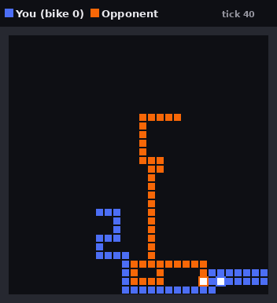
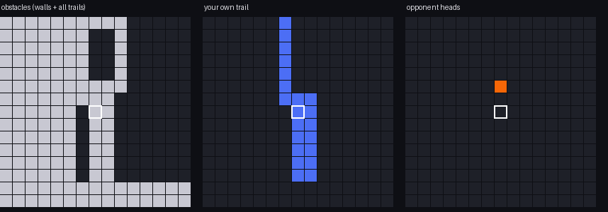

How the models see the board
All five models get the same observation, computed by the same code. A model may use less of it (NEAT and CMA-ES read only the 23 numbers), but never more. Mini-AlphaZero is the one exception: tree search plays possible futures forward, so it also uses the game's rules as a simulator. That's what the method is.
A position
Tick 40 of a game between two avoid-walls bots. You're blue; the white square with the blue border is your head, and the orange bike is two cells straight ahead of you.

1. A 15 × 15 window, rotated so you always face up
The window is centred on your head (white outline) and turned with the bike, so "up" always means "straight ahead" and the three actions always mean the same thing: left, straight, right. Cells outside the board count as obstacles. Three layers:

Left: everything that kills you (walls and all trails). Middle: your own trail only. Right: other bikes' heads (the opponent two cells ahead). The window shows 15 × 15 of the 30 × 30 board; the numbers below cover the rest.
2. Twenty-three numbers about the whole board
What "free cells" and "territory" mean
Free cells if left/straight/right: how many empty cells you could still reach (flood fill) after that move, as a share of the 900 cells. 0 means the move crashes immediately. Late in a game this is the difference between living and dying: if you enter a pocket of 12 cells, you have at most 12 ticks left.
Territory: after that move, the cells you'd reach before the opponent minus the cells the opponent reaches first (a Voronoi split of the board, from breadth-first search on both sides), as a share of 900. It's the classic heuristic of strong Tron bots: claim more space than the opponent, then cut them off.
Walled off: 1 when you can no longer reach any cell the opponent can reach. From then on the game is only about filling your own area efficiently.
These numbers make the game much easier to learn, and they also make the space-filler bot a fair yardstick: it uses nothing but "free cells", always picking the largest. Beating it means a model learned more than one of its 23 inputs.
What each model reads
| Model | Window (675 values) | 23 numbers | Also |
|---|---|---|---|
| PPO | ✓ | ✓ | |
| DQN | ✓ | ✓ | |
| Mini-AlphaZero | ✓ | ✓ | the game rules, to search ahead |
| NEAT | ✓ | ||
| CMA-ES | ✓ |
Why the evolution methods skip the window: evolution scales badly with the number of inputs. NEAT would start with 2,000+ connections instead of 69, and CMA-ES's covariance matrix grows with the square of the number of weights.